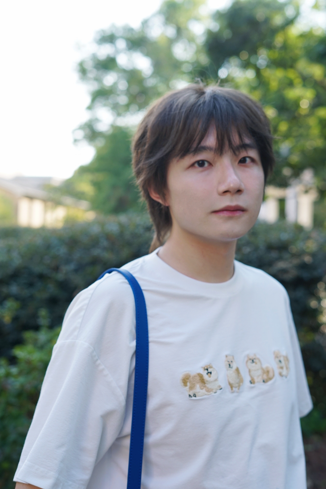
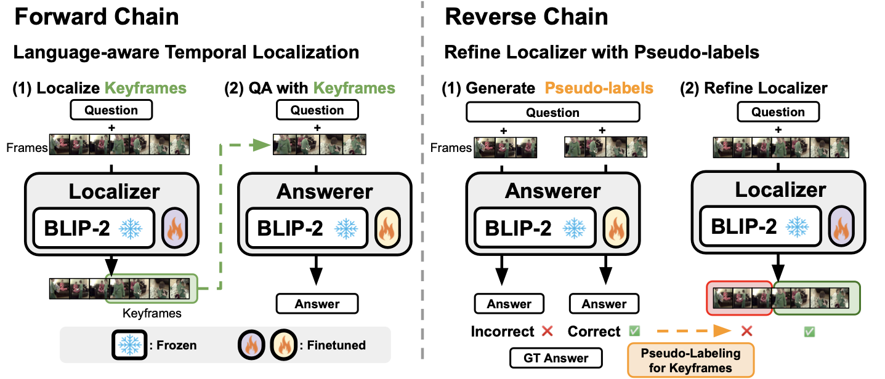
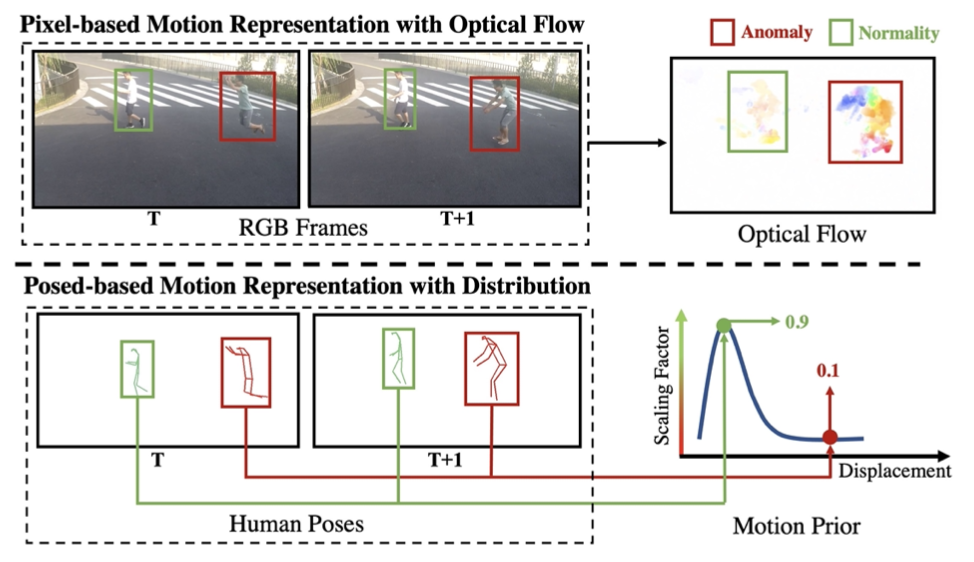

|
Shoubin Yu (喻守彬)
Hi, thanks for stopping by!
I am now a second-year Ph.D. Student at The University of North Carolina, Chapel Hill, advised by Prof. Mohit Bansal.
Previously, I did my undergraduate study at Shanghai Jiao Tong University.
I am interested in wide topics in computer vision, especially in video, including video+X (language, audio, robotics...), video understanding, generation, reasoning, representation learning...
I'm also open to other interesting topics in natural language processing, psychology, and history.
My current research goal is to build a system understand complex visual scenes and make optimal decisions effectively, efficiently,
and interpretably.
Feel free to reach out for questions/discussion/brainstorming on interesting research topics or just for chatting üò¨!
Email /
Google Scholar /
Twitter /
Github /
CV
|
|
News
Jul. 2023: ü¶¥ We have one paper accepted to IEEE TCSVT. Check MoPRL for skeletal anomaly detection.
May. 2023: üåû I will intern at Amazon as Research Scientist Intern for Summer 2023.
Jun. 2022: üéì Graduate from Shanghai Jiao Tong University! (excellent graduates)
Apr. 2022: ⛪️ I will join UNC-CH MURGe-Lab in Fall 2022
Oct. 2021: üåü We have one paper accepted to NeurIPS 2021. Check STAR for situated reasoning.
|
|
Preprint / Under Review
|
|

|
Self-Chained Image-Language Model for Video Localization and Question Answering
Shoubin Yu,
Jaemin Cho,
Prateek Yadav,
Mohit Bansal
arxiv preprint, 2023
[paper]
[code]
[demo]
|
|
Publication
|
|
|
STAR: A Benchmark for Situated Reasoning in Real-World Videos
Bo Wu,
Shoubin Yu,
Zhenfang Chen,
Joshua B. Tenenbaum,
Chuang Gan
NeurIPS 2021 Track Datasets and Benchmark, 2021
[paper]
[code]
[project page]
|
|

|
Regularity Learning via Explicit Distribution Modeling for Skeletal Video Anomaly Detection
Shoubin Yu,
Zhongyin Zhao,
Haoshu Fang,
Andong Deng,
Haisheng Su, Dongliang Wang, Weihao Gan, Cewu Lu,
Wei Wu
IEEE Transactions on Circuits and Systems for Video Technology, 2023
[paper]
[code]
|
|
Internship & Experience
|
|
May. 2023 - Aug. 2023: Research Scientist Intern, Amazon Alexa AI
Jan. 2021 - Dec. 2021: Research Assistant, MIT-IBM Watson AI Lab
Jan. 2021 - Apr. 2022: Research Intern, SenseTime
Jan. 2021 - Nov. 2021: Research Assistant, MVIG
|
|
Patents & Awards
|
|
CN Patent CN110969107A, 2019
CN Patent CN114724062A, 2022
Meritorious Award in Mathematical Contest in Modeling, 2019
Second Prize in Shanghai, China Undergraduate Mathematical Contest in Modeling, 2019
The Hui-Chun Chin and Tsung Dao Lee Scholar, 2020
|
|
Professional Service
|
|
Conference reviewer: ACL 2023, EACL 2023, CVPR 2023 Workshop, AAAI 2023 Workshop
Journal reviewer: IEEE Transactions on Circuits and Systems for Video Technology
|
|
Misc
|
|
My family name Yu, pronounced as Yui rather than You.
You can also call me Eric alternatively.
Personally, I don't like MBTI theory, but I'm an ENFJ üòõ.
|
|